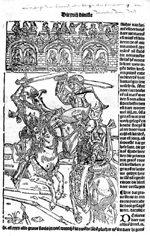

[Cornelius Aurelius], Die cronycke van Hollandt, Zeelandt ende Vrieslant, beghinnende van Adams tiden tot die geboerte ons heren Ihesu, voertgaende tot den iare M.CCCCC. ende Xvij. [Voleynt tot Leyden, bi mi Ian Seversen, 1517.] -- (1368 B 19)
Deze kroniek, door P.J. Blok ‘de sluitsteen van de middeleeuwsche geschiedschrijving’ genoemd, is een bewerking van Johannes à Leydis’ Chronicon comitatum Hollandiae et episcoporum Ultrajectensium (Kroniek van de graven van Holland en de Utrechtse bisschoppen). De bewerker was de augustijner monnik Cornelius Aurelius, die omstreeks 1517 woonachtig was in het klooster Lopsen (of Hieronymusdal) bij Leiden. Dit dikke foliodeel, ook wel ‘Divisie-kroniek’ geheten, behandelt de vaderlandse geschiedenis vanaf het begin der tijden tot het jaar 1517. Het boek heeft een wat tweeslachtig karakter: Aurelius probeerde een wetenschappelijke afstand te nemen tot de al te grove fabels die zijn voorgangers vertelden, maar de drukker/uitgever Jan Seversz wenste daar in zijn illustraties nu juist eens extra de nadruk op te vestigen.
Volgens hun herkomst worden de illustraties, alle houtsneden, door H. van de Waal in elf groepen onderverdeeld. Opvallend zijn vooral de grote, al dan niet verzaagde blokken die tevoren in Gouda in twee uitgaven zijn gebruikt: de Historie van hertoghe Godevaert van Boloen van omstreeks 1486-1489 en een niet nader te dateren druk van Olivier de la Marches Le chevalier délibéré. Voorts schrijft Van de Waal tien houtsneden toe aan Lucas van Leiden.
Voor de illustratie op folio 162v, die de dood van graaf Floris IV tijdens een toernooi moest verbeelden, heeft Seversz twee houtblokken uit Le chevalier délibéré verzaagd, een voor het bovenstuk met de toeschouwers en een voor het tweegevecht. Zo kon hij onderdelen van blokken die aanvankelijk iets totaal anders voorstelden, voor zijn doel geschikt maken.
Literatuur
- Wouter Nijhoff en M.E. Kronenberg, Nederlandsche bibliographie van 1500 tot 1540. ’s-Gravenhage 1926-(1971)- , 613.
- H. van de Waal, Drie eeuwen vaderlandsche geschieduitbeelding, 1500-1800. Een iconologische studie. ’s-Gravenhage 1952. 2 dln, I, p. 127-153.
- De vijfhonderdste verjaring van de boekdrukkunst in de Nederlanden. Brussel 1973, p. 518.
| vorige pagina | top pagina |